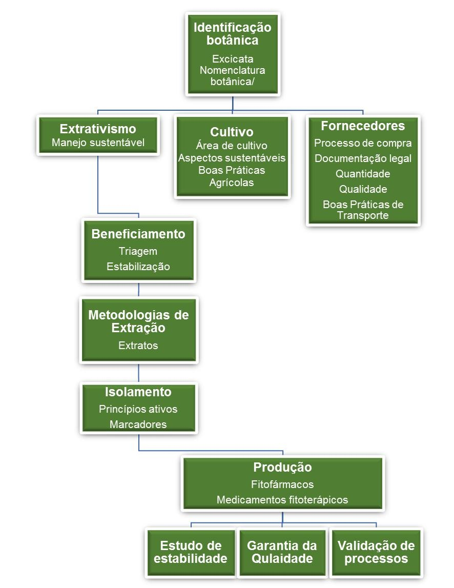

Para continuarmos é necessário que você tenha em mente os conceitos de fitofármacos e fitoterápicos. Portanto, caso seja necessário retorne ao inicio do módulo para que você possa relembrar estes conceitos.
Geralmente iniciamos a produção de fitofármacos e de fitoterápicos pela aquisição dos insumos farmacêuticos. Por representar o início da produção, os insumos estão sujeitos a rigoroso controle. Afinal, a qualidade das matérias-primas usadas para fabricar medicamentos pode ser a diferença entre um produto eficaz ou não.
A transformação da planta medicinal para um produto tecnicamente elaborado, que pode ser intermediário ou acabado, implica na utilização de operações de transformação tecnológica. A complexidade do processo e o número de operações envolvidas estão determinados pelo grau de transformação requerido, que pode ser mínimo, como é o caso de droga em pó ou rasuradas destinados à preparação de chás; ou bem maior, quando o objetivo é obter frações purificadas ou fórmulas sólidas revestidas, ou ainda a obtenção de fitofármacos.
Etapas de produção de fitofármacos e fitoterápicos

Fonte: Adaptado de CECHINEL FILHO E YUNES (1998).
Ao adquirirmos os insumos derivados de espécies vegetais devemos considerar a identificação botânica, a quantidade necessária para a produção, bem como a sua disponibilidade e a qualidade do material.
Para obtermos insumos de origem vegetal com qualidade e em quantidade, sem causar grande impacto ambiental e preservar os recursos genéticos, devemos considerar inciativas como o desenvolvimento de sistemas que permitem o uso sustentável das espécies nativas exploradas e, o cultivo com base em pesquisas agronômicas, ou ainda a domesticação de espécies exóticas e nativas. As pesquisas agronômicas têm como objetivo a produção abundante e homogênea de insumo vegetal levando-se em consideração os aspectos sanitários de manejo e beneficiamento da espécie, de forma a preservar a espécie e a biodiversidade.
Após a colheita o material é estabilizado através da secagem em estufa à temperatura mais apropriada para cada espécie de forma a garantir o perfil químico bem como o teor de seus componentes ativos e/ou marcadores. Após a estabilização segue-se a obtenção do extrato. O extrato obtido por maceração ou percolação será utilizado na formulação ou no isolamento das substâncias ativas ou marcadores químicos.
Uma vez desenvolvida, a formulação passará pelos estudos de estabilidade e validação. Estes estudos seguem a regulamentação geral estabelecida para medicamentos pela ANVISA. Porém, devido à complexidade de sua composição, foram adotadas orientações específicas para fitoterápicos e produtos tradicionais fitoterápicos as quais são detalhadas em Instruções Normativas como a IN 04/14.